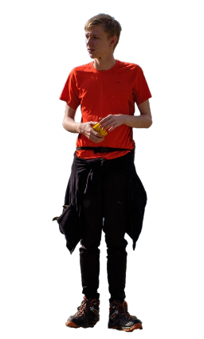

БИОГРАФИЯ

Приветствую Вас на сайте про меня.
Меня зовут Прокофьев Сергей, мне 19 лет, живу в Московском поселении Вороново, учусь в МИРЭА.
Так с чего же все началось?
Рождение
А началось все 24 июля 2001 года.
Это был жаркий летний день в Краснодаре, именно тогда родился малыш, которого в дальнейшем назовут Сергей.
Школьные годы
Я не буду рассказывать, что было в садике или до него, потому что ничего интересно там не было(либо я не помню этого)
Мои школьные годы можно разделить на две категории: учеба в Краснодаре и учеба в Вороново.
Краснодар
В Краснодаре я проучился с 1 по 6 класс (включительно) в школе №78. Именно здесь я впервые познакомился с туризмом и волейболом и нашел друзей, с которыми общаюсь до сих пор
Пока я там жил, то занимался легкой атлетикой, а именно прыжками в высоту. По словам тренера, у меня хорошо получалось и он хотел попробовать выставить меня на соревнования. Но к сожалению мы переехали, а тут, в Вороново, не было возможности заниматься легкой атлетикой.
На волейбол я пошел в 3 или 4 классе, помимо него я также пробовал играть в баскетбол и футбол, но они казались скучными по сравнению с волейболом. Я вошел в сборную нашей школы и мы заняли 2 место в соревнованиях среди школ в Краснодаре.
Москва
Я приехал сюда в 14 лет. К сожалению, как я писал ниже, тут не было секции легкой атлетики, но зато я смог продолжить ходить на волейбол, а через некоторое время начал заниматься спортивным туризмом, ходить в походы и волонтерить на мероприятиях.
Как только я приехал я вступил в активисты школы №2073. Я помогал организовывать мероприятия и ездил представлять нашу школу на слеты в "Команду" и даже однажды вошел в топ 100 активистов Москвы.
В этой школе я побывал на многих туристических слетах, конференциях, соревнованиях, олимпиадах и в конечном итоге за все свои достижения я смог поехать в "Артек", где был в составе морского отряда.
И вот в конце концов я сдал ЕГЭ и поступил в МИРЭА.
КОНЕЦ

Помогите Сереже
попутешествовать
